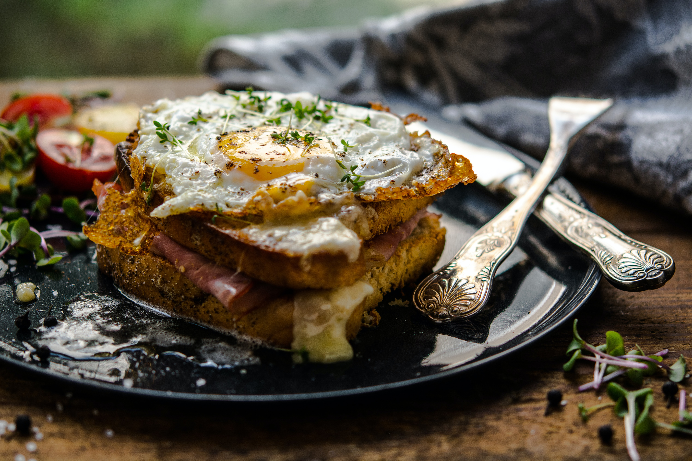
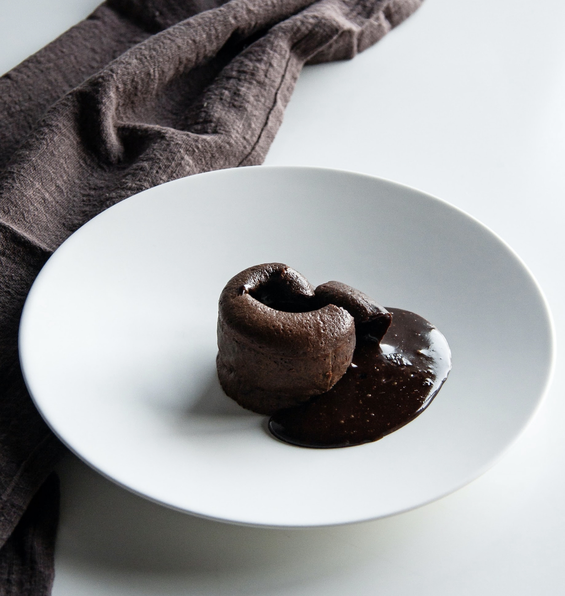

Home
Noord-Amerika
Amerikaans
Mexicaans
Europa
Duits
Frans
Italiaans
Nederlands
Azië
Indonesisch
Japans
Vegan
Over ons
Frans
Voorgerecht
Hoofdgerecht
Nagerecht
Voorgerecht
Klassieke groene salade (2 personen(flinke portie))
Ingrediënten
1 crop baby romaine sla
1 eetlepel dijonmosterd
Sap van een halve citroen
2 à 3 eetlepel olijfolie
Zout en peper
Eventueel 1 à 2 bosuitjes (in ringetjes)
2 dikke sneden brood (in stukjes)
Benodigdheden
-
Bereidingswijze
Bereid eerst de croutons voor de salade: hussel de stukjes brood met de olijfolie, zout, peper en
eventueel andere smaakmakers als knoflook of gedroogde kruiden.
Zet ze minstens 10 minuten op 150 graden in de oven.
Klop de ingrediënten voor de dressing door elkaar en zet deze opzij.
Was de sla, snijd hem in stukken en sla deze eventueel droog in een slacentrifuge.
Serveer de salade met de croutons en de dressing en nog wat extra peper en zout, naar smaak.
Voorgerecht
Nagerecht
Hoofdgerecht
Croque monsieur (1 portie)

Ingrediënten
2 dikke plakken brood
(wit en van een dag oud is aangeraden)
2 plakken ham
40-50 gram geraspte Gruyère of Emmentaler
of een andere pittige, smeltende kaas
3-4 eetlepels bechamelsaus
Mosterd
Parmezaan
Klontje roomboter
Zwarte peper
Benodigdheden
Koekenpan
Ovenbestendige schaal/bord
Bereidingswijze
Verwarm de oven voor op de grillstand.
Besmeer de plakken brood aan één kant met roomboter en verwarm deze in een koekenpan op middelhoog vuur.
Smelt hierin ook een beetje roomboter en besmeer een sneetje aan de droge kant met de mosterd. Beleg met de geraspte kaas en ham.
Top met het andere sneetje en bak in de pan totdat de kaas gesmolten is en de buitenkant goudbruin en krokant.
Haal de croque uit de pan en leg deze in een ovenbestendige schaal of op een bord.
Leg hierop een paar lepels bechamelsaus, de Parmezaan en een flinke snuf zwarte peper.
Doe de croque nu nog een paar minuutjes in de oven en serveer deze.
Voorgerecht
Hoofdgerecht
Nagerecht
Lava cake (2 personen)

Ingrediënten
1 eidooier
1 ei
25 gram suiker
50 gram chocolade
50 gram boter
10 gram bloem
2 timbaalvormpjes
Voor versiering eventueel nog
poedersuiker, slagroom of fuit
Benodigdheden
Garde
Steelpannetje
Spatel
Bereidingswijze
Verwarm de oven voor op 170 graden.
Klop de eidooiers met de eieren en suiker los tot een luchtig mengsel.
Smelt de boter in een steelpannetje. Hak de chocolade fijn, voeg deze toe aan de gesmolten boter en laat smelten tot de warmte van de boter.
Giet het chocolademengsel op het eimengsel en spatel voorzichtig door elkaar. Spatel de bloem er ook doorheen.
Vet de vormpjes in met een beetje gesmolten boter en bestrooi de vormpjes aan de binnenkant met een beetje kristalsuiker.
Draai de vormpjes, zodat de hele binnenkant bedekt is met een laagje suiker. Giet het overtollige suiker eruit.
Vul de vormpjes tot drie vierde met het beslag en bak ze in ongeveer 14 minuten gaar.
Klop eventueel de slagroom luchtig met de suiker en bewaar tot gebruik in de koelkast.